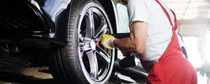

- Fabricación de puertas metalicas (corredera, batiente, basculante contrapesada o basculante de muelles,
seccional, enrollable y puertas de hojas)
- Automoticazión de todo tipo de puertas y contratos de mantenimiento para comunidades y empresas.
- Construcción de estructuras metalicas para naves y viviendas, plataformas de acceso y bases metálicas
- Vallados de fincas y cerramientos metalicos
- Todo tipo de trabajos en acero inoxidable
- Trabajos de soldadura (electrodo y tig), guillotina, plegadora y punzonadora
- Servicio de cerrajeria y apertura de puertas

- Escaleras metalicas, barandillas, rejas de seguridad y decorativas
- Trabajos relacionados con la construcción (grandes y pequeñas empresas)
- Puertas de trasteros, cortafuegos y puertas de seguridad.
- Cubiertas para aparcamientos de vehiculos, techos para cerramiento de patios y terrazas (chapa
grecada o chapa sandwich).
- Fabricación a medida de sombreros de chimeneas con lamas de chapa inclinada, capucha superior y
terminación en cuatro vertientes.
- Canales de desague para tejados y bajantes en chapa galvanizada.
- Arcos decorativos para pozos fabricados en forja y tapas de hierro.
- Trabajos de reparación y soldadura de maquinaria agrícola y ganadera